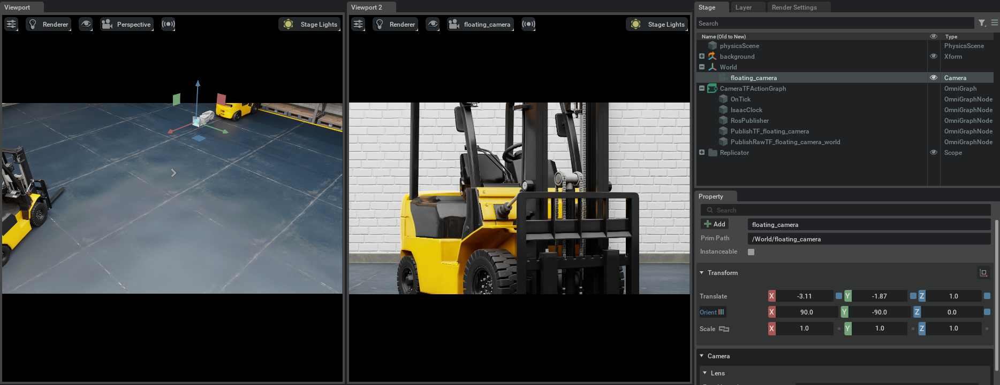
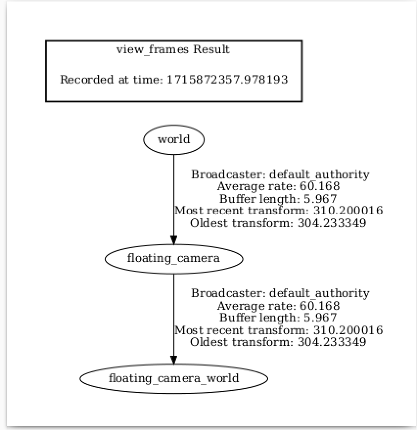
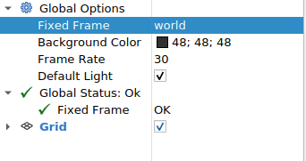
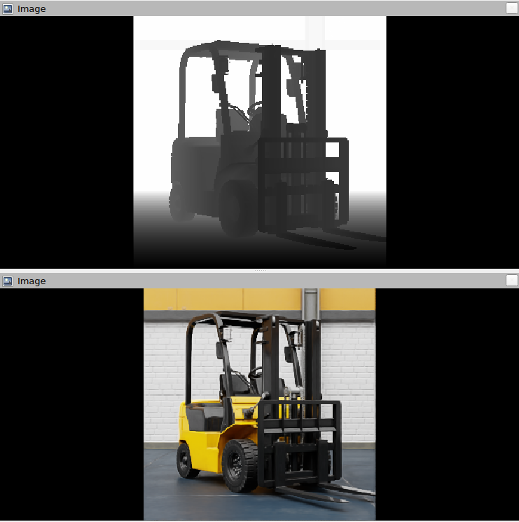
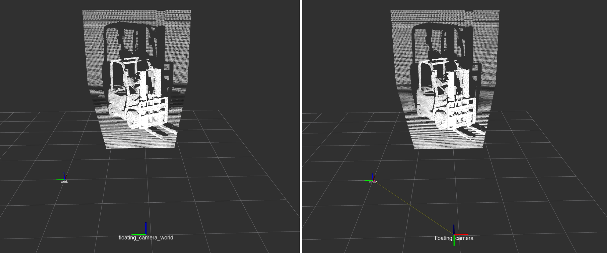
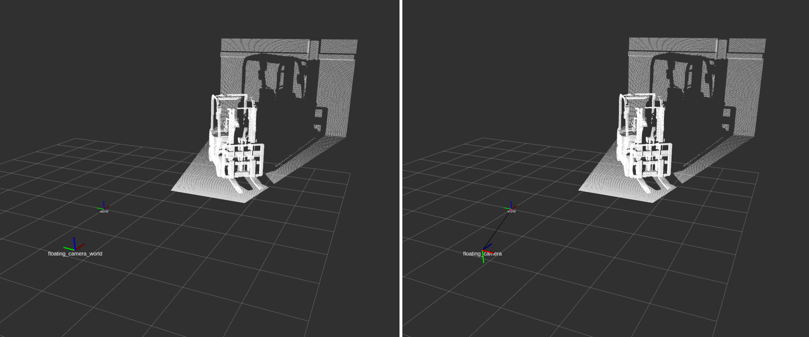

Publishing Camera’s Data#
Learning Objectives#
In this tutorial, you learn how to programmatically set up ROS 2 publishers for Isaac Sim Cameras. Under multitick rendering, the publish cadence is driven by the camera’s tick_rate (set on the RtxCamera), so no per-publisher rate-divider is needed. To configure different publish rates per sensor, see ROS2 Setting Publish Rates.
Getting Started#
Prerequisite
Completed the ROS 2 Cameras tutorial.
Completed ROS 2 Installation (Default) so that the necessary environment variables are set and sourced before launching NVIDIA Isaac Sim.
Read through the Sensor Axes Representation (LiDAR, Cameras).
Read through how to programmatically create a Camera sensor object in the scene.
ROS 2 Bridge is enabled.
Note
In Windows 11, depending on your machine’s configuration, RViz2 might not open properly.
Setup a Camera in a Scene#
To begin this tutorial, set up an environment with a Camera object. Running the following code results in a basic warehouse environment loaded with a camera in the scene.
import argparse
import sys
parser = argparse.ArgumentParser()
parser.add_argument("--test", action="store_true", help="Run in test mode.")
args, _ = parser.parse_known_args()
import carb
from isaacsim import SimulationApp
BACKGROUND_STAGE_PATH = "/background"
BACKGROUND_USD_PATH = "/Isaac/Environments/Simple_Warehouse/warehouse_with_forklifts.usd"
CONFIG = {"renderer": "RayTracedLighting", "headless": False}
# Example ROS 2 bridge sample demonstrating the manual loading of stages and manual publishing of images
simulation_app = SimulationApp(CONFIG)
import isaacsim.core.experimental.utils.app as app_utils
import isaacsim.core.experimental.utils.stage as stage_utils
import isaacsim.core.experimental.utils.transform as transform_utils
import numpy as np
import omni
import omni.graph.core as og
import omni.replicator.core as rep
import omni.syntheticdata._syntheticdata as sd
from isaacsim.core.nodes.scripts.utils import set_target_prims
from isaacsim.sensors.experimental.rtx import CameraSensor, RtxCamera
from isaacsim.storage.native import get_assets_root_path
# Enable ROS 2 bridge extension
app_utils.enable_extension("isaacsim.ros2.bridge")
simulation_app.update()
stage_utils.set_stage_units(meters_per_unit=1.0)
# Locate Isaac Sim assets folder to load environment and robot stages
assets_root_path = get_assets_root_path()
if assets_root_path is None:
carb.log_error("Could not find Isaac Sim assets folder")
simulation_app.close()
sys.exit()
# Loading the environment
stage_utils.add_reference_to_stage(assets_root_path + BACKGROUND_USD_PATH, BACKGROUND_STAGE_PATH)
Publish Camera Intrinsics to CameraInfo Topic#
The following snippet will publish camera intrinsics associated with a Camera prim to a sensor_msgs/CameraInfo topic.
def publish_camera_info(sensor: CameraSensor): from isaacsim.ros2.core import read_camera_info rp_path, _, frame_id = _get_sensor_info(sensor) topic_name = frame_id + "_camera_info" writer = rep.writers.get("ROS2PublishCameraInfo") camera_info, _ = read_camera_info(render_product_path=rp_path) writer.initialize( frameId=frame_id, nodeNamespace="", queueSize=1, topicName=topic_name, width=camera_info.width, height=camera_info.height, projectionType=camera_info.distortion_model, k=camera_info.k.reshape([1, 9]), r=camera_info.r.reshape([1, 9]), p=camera_info.p.reshape([1, 12]), physicalDistortionModel=camera_info.distortion_model, physicalDistortionCoefficients=camera_info.d, ) writer.attach([rp_path])
Publish Pointcloud from Depth Images#
In the following snippet, a pointcloud is published to a sensor_msgs/PointCloud2 message. This pointcloud is reconstructed from the depth image using the intrinsics of the camera.
def publish_pointcloud_from_depth(sensor: CameraSensor): rp_path, _, frame_id = _get_sensor_info(sensor) topic_name = frame_id + "_pointcloud" # Note, this pointcloud publisher will convert the Depth image to a pointcloud using the Camera intrinsics. # This pointcloud generation method does not support semantic labeled objects. rv = omni.syntheticdata.SyntheticData.convert_sensor_type_to_rendervar(sd.SensorType.DistanceToImagePlane.name) writer = rep.writers.get(rv + "ROS2PublishPointCloud") writer.initialize(frameId=frame_id, nodeNamespace="", queueSize=1, topicName=topic_name) writer.attach([rp_path])
Publish RGB Images#
def publish_rgb(sensor: CameraSensor): rp_path, _, frame_id = _get_sensor_info(sensor) topic_name = frame_id + "_rgb" rv = omni.syntheticdata.SyntheticData.convert_sensor_type_to_rendervar(sd.SensorType.Rgb.name) writer = rep.writers.get(rv + "ROS2PublishImage") writer.initialize(frameId=frame_id, nodeNamespace="", queueSize=1, topicName=topic_name) writer.attach([rp_path])
Publish Depth Images#
def publish_depth(sensor: CameraSensor): rp_path, _, frame_id = _get_sensor_info(sensor) topic_name = frame_id + "_depth" rv = omni.syntheticdata.SyntheticData.convert_sensor_type_to_rendervar(sd.SensorType.DistanceToImagePlane.name) writer = rep.writers.get(rv + "ROS2PublishImage") writer.initialize(frameId=frame_id, nodeNamespace="", queueSize=1, topicName=topic_name) writer.attach([rp_path])
Publish a TF Tree for the Camera Pose#
The pointcloud, published using the above function, will publish the pointcloud in the ROS camera axes convention (-Y up, +Z forward). To make visualizing this pointcloud easy in ROS using RViz, the following snippet will publish a TF Tree to the /tf, containing two frames.
The two frames are:
{camera_frame_id}: This is the camera’s pose in the ROS camera convention (-Y up, +Z forward). Pointclouds are published in this frame.{camera_frame_id}_world: This is the camera’s pose in the World axes convention (+Z up, +X forward). This will reflect the true pose of the camera.
{kind=link}
{kind=link}
The TF Tree looks like this:
{kind=link}
world ->
{camera_frame_id}is a dynamic transform from origin to the camera in the ROS camera convention, following any movement of the camera.{camera_frame_id}->{camera_frame_id}_worldis a static transform consisting of only a rotation and zero translation. This static transform can be represented by the quaternion [0.5, -0.5, 0.5, 0.5] in [w, x, y, z] convention.
Because the pointcloud is published in {camera_frame_id}, it is encouraged to set the frame_id of the pointcloud topic to {camera_frame_id}. The resulting visualization of the pointclouds can be viewed in the world frame in RViz.
def publish_camera_tf(sensor: CameraSensor):
_, camera_prim_path, camera_frame_id = _get_sensor_info(sensor)
try:
ros_camera_graph_path = "/CameraTFActionGraph"
# If a camera graph is not found, create a new one.
if not stage_utils.get_current_stage().GetPrimAtPath(ros_camera_graph_path).IsValid():
og.Controller.edit(
{
"graph_path": ros_camera_graph_path,
"evaluator_name": "execution",
"pipeline_stage": og.GraphPipelineStage.GRAPH_PIPELINE_STAGE_SIMULATION,
},
{
og.Controller.Keys.CREATE_NODES: [
("OnTick", "omni.graph.action.OnTick"),
("IsaacClock", "isaacsim.core.nodes.IsaacReadSimulationTime"),
("RosPublisher", "isaacsim.ros2.bridge.ROS2PublishClock"),
],
og.Controller.Keys.CONNECT: [
("OnTick.outputs:tick", "RosPublisher.inputs:execIn"),
("IsaacClock.outputs:simulationTime", "RosPublisher.inputs:timeStamp"),
],
},
)
# Generate 3 nodes associated with each camera: a ComputeTF node that walks the prim hierarchy
# to produce parent/child frames and pose arrays, a TF publisher fed by the ComputeTF outputs,
# and a raw TF publisher for the static camera-convention-to-world rotation.
og.Controller.edit(
ros_camera_graph_path,
{
og.Controller.Keys.CREATE_NODES: [
("ComputeTF_" + camera_frame_id, "isaacsim.core.nodes.IsaacComputeTransformTree"),
("PublishTF_" + camera_frame_id, "isaacsim.ros2.bridge.ROS2PublishTransformTree"),
("PublishRawTF_" + camera_frame_id + "_world", "isaacsim.ros2.bridge.ROS2PublishRawTransformTree"),
],
og.Controller.Keys.SET_VALUES: [
("PublishTF_" + camera_frame_id + ".inputs:topicName", "/tf"),
# Note if topic_name is changed to something else besides "/tf",
# it will not be captured by the ROS tf broadcaster.
("PublishRawTF_" + camera_frame_id + "_world.inputs:topicName", "/tf"),
("PublishRawTF_" + camera_frame_id + "_world.inputs:parentFrameId", camera_frame_id),
("PublishRawTF_" + camera_frame_id + "_world.inputs:childFrameId", camera_frame_id + "_world"),
# Static transform from ROS camera convention to world (+Z up, +X forward) convention:
("PublishRawTF_" + camera_frame_id + "_world.inputs:rotation", [0.5, -0.5, 0.5, 0.5]),
],
og.Controller.Keys.CONNECT: [
(ros_camera_graph_path + "/OnTick.outputs:tick", "ComputeTF_" + camera_frame_id + ".inputs:execIn"),
(
"ComputeTF_" + camera_frame_id + ".outputs:execOut",
"PublishTF_" + camera_frame_id + ".inputs:execIn",
),
(
"ComputeTF_" + camera_frame_id + ".outputs:parentFrames",
"PublishTF_" + camera_frame_id + ".inputs:parentFrames",
),
(
"ComputeTF_" + camera_frame_id + ".outputs:childFrames",
"PublishTF_" + camera_frame_id + ".inputs:childFrames",
),
(
"ComputeTF_" + camera_frame_id + ".outputs:translations",
"PublishTF_" + camera_frame_id + ".inputs:translations",
),
(
"ComputeTF_" + camera_frame_id + ".outputs:orientations",
"PublishTF_" + camera_frame_id + ".inputs:orientations",
),
(
ros_camera_graph_path + "/OnTick.outputs:tick",
"PublishRawTF_" + camera_frame_id + "_world.inputs:execIn",
),
(
ros_camera_graph_path + "/IsaacClock.outputs:simulationTime",
"PublishTF_" + camera_frame_id + ".inputs:timeStamp",
),
(
ros_camera_graph_path + "/IsaacClock.outputs:simulationTime",
"PublishRawTF_" + camera_frame_id + "_world.inputs:timeStamp",
),
],
},
)
except Exception as e:
print(e)
# Set the target prim on the ComputeTF node; the PublishTF node consumes its outputs.
set_target_prims(
primPath=ros_camera_graph_path + "/ComputeTF_" + camera_frame_id,
inputName="inputs:targetPrims",
targetPrimPaths=[camera_prim_path],
)
Running the Example#
The full standalone script combining all of the above sections is available here:
Full Script
import argparse
import sys
parser = argparse.ArgumentParser()
parser.add_argument("--test", action="store_true", help="Run in test mode.")
args, _ = parser.parse_known_args()
import carb
from isaacsim import SimulationApp
BACKGROUND_STAGE_PATH = "/background"
BACKGROUND_USD_PATH = "/Isaac/Environments/Simple_Warehouse/warehouse_with_forklifts.usd"
CONFIG = {"renderer": "RayTracedLighting", "headless": False}
# Example ROS 2 bridge sample demonstrating the manual loading of stages and manual publishing of images
simulation_app = SimulationApp(CONFIG)
import isaacsim.core.experimental.utils.app as app_utils
import isaacsim.core.experimental.utils.stage as stage_utils
import isaacsim.core.experimental.utils.transform as transform_utils
import numpy as np
import omni
import omni.graph.core as og
import omni.replicator.core as rep
import omni.syntheticdata._syntheticdata as sd
from isaacsim.core.nodes.scripts.utils import set_target_prims
from isaacsim.sensors.experimental.rtx import CameraSensor, RtxCamera
from isaacsim.storage.native import get_assets_root_path
# Enable ROS 2 bridge extension
app_utils.enable_extension("isaacsim.ros2.bridge")
simulation_app.update()
stage_utils.set_stage_units(meters_per_unit=1.0)
# Locate Isaac Sim assets folder to load environment and robot stages
assets_root_path = get_assets_root_path()
if assets_root_path is None:
carb.log_error("Could not find Isaac Sim assets folder")
simulation_app.close()
sys.exit()
# Loading the environment
stage_utils.add_reference_to_stage(assets_root_path + BACKGROUND_USD_PATH, BACKGROUND_STAGE_PATH)
###### Camera helper functions for setting up publishers. ########
def _get_sensor_info(sensor: CameraSensor) -> tuple[str, str, str]:
"""Extract render product path, camera prim path, and frame id from a CameraSensor."""
rp_path = str(sensor.render_product.GetPath())
prim_path = sensor.authoring_object.paths[0]
frame_id = prim_path.split("/")[-1]
return rp_path, prim_path, frame_id
def publish_camera_info(sensor: CameraSensor):
from isaacsim.ros2.core import read_camera_info
rp_path, _, frame_id = _get_sensor_info(sensor)
topic_name = frame_id + "_camera_info"
writer = rep.writers.get("ROS2PublishCameraInfo")
camera_info, _ = read_camera_info(render_product_path=rp_path)
writer.initialize(
frameId=frame_id,
nodeNamespace="",
queueSize=1,
topicName=topic_name,
width=camera_info.width,
height=camera_info.height,
projectionType=camera_info.distortion_model,
k=camera_info.k.reshape([1, 9]),
r=camera_info.r.reshape([1, 9]),
p=camera_info.p.reshape([1, 12]),
physicalDistortionModel=camera_info.distortion_model,
physicalDistortionCoefficients=camera_info.d,
)
writer.attach([rp_path])
def publish_pointcloud_from_depth(sensor: CameraSensor):
rp_path, _, frame_id = _get_sensor_info(sensor)
topic_name = frame_id + "_pointcloud"
# Note, this pointcloud publisher will convert the Depth image to a pointcloud using the Camera intrinsics.
# This pointcloud generation method does not support semantic labeled objects.
rv = omni.syntheticdata.SyntheticData.convert_sensor_type_to_rendervar(sd.SensorType.DistanceToImagePlane.name)
writer = rep.writers.get(rv + "ROS2PublishPointCloud")
writer.initialize(frameId=frame_id, nodeNamespace="", queueSize=1, topicName=topic_name)
writer.attach([rp_path])
def publish_rgb(sensor: CameraSensor):
rp_path, _, frame_id = _get_sensor_info(sensor)
topic_name = frame_id + "_rgb"
rv = omni.syntheticdata.SyntheticData.convert_sensor_type_to_rendervar(sd.SensorType.Rgb.name)
writer = rep.writers.get(rv + "ROS2PublishImage")
writer.initialize(frameId=frame_id, nodeNamespace="", queueSize=1, topicName=topic_name)
writer.attach([rp_path])
def publish_depth(sensor: CameraSensor):
rp_path, _, frame_id = _get_sensor_info(sensor)
topic_name = frame_id + "_depth"
rv = omni.syntheticdata.SyntheticData.convert_sensor_type_to_rendervar(sd.SensorType.DistanceToImagePlane.name)
writer = rep.writers.get(rv + "ROS2PublishImage")
writer.initialize(frameId=frame_id, nodeNamespace="", queueSize=1, topicName=topic_name)
writer.attach([rp_path])
def publish_camera_tf(sensor: CameraSensor):
_, camera_prim_path, camera_frame_id = _get_sensor_info(sensor)
try:
ros_camera_graph_path = "/CameraTFActionGraph"
# If a camera graph is not found, create a new one.
if not stage_utils.get_current_stage().GetPrimAtPath(ros_camera_graph_path).IsValid():
og.Controller.edit(
{
"graph_path": ros_camera_graph_path,
"evaluator_name": "execution",
"pipeline_stage": og.GraphPipelineStage.GRAPH_PIPELINE_STAGE_SIMULATION,
},
{
og.Controller.Keys.CREATE_NODES: [
("OnTick", "omni.graph.action.OnTick"),
("IsaacClock", "isaacsim.core.nodes.IsaacReadSimulationTime"),
("RosPublisher", "isaacsim.ros2.bridge.ROS2PublishClock"),
],
og.Controller.Keys.CONNECT: [
("OnTick.outputs:tick", "RosPublisher.inputs:execIn"),
("IsaacClock.outputs:simulationTime", "RosPublisher.inputs:timeStamp"),
],
},
)
# Generate 3 nodes associated with each camera: a ComputeTF node that walks the prim hierarchy
# to produce parent/child frames and pose arrays, a TF publisher fed by the ComputeTF outputs,
# and a raw TF publisher for the static camera-convention-to-world rotation.
og.Controller.edit(
ros_camera_graph_path,
{
og.Controller.Keys.CREATE_NODES: [
("ComputeTF_" + camera_frame_id, "isaacsim.core.nodes.IsaacComputeTransformTree"),
("PublishTF_" + camera_frame_id, "isaacsim.ros2.bridge.ROS2PublishTransformTree"),
("PublishRawTF_" + camera_frame_id + "_world", "isaacsim.ros2.bridge.ROS2PublishRawTransformTree"),
],
og.Controller.Keys.SET_VALUES: [
("PublishTF_" + camera_frame_id + ".inputs:topicName", "/tf"),
# Note if topic_name is changed to something else besides "/tf",
# it will not be captured by the ROS tf broadcaster.
("PublishRawTF_" + camera_frame_id + "_world.inputs:topicName", "/tf"),
("PublishRawTF_" + camera_frame_id + "_world.inputs:parentFrameId", camera_frame_id),
("PublishRawTF_" + camera_frame_id + "_world.inputs:childFrameId", camera_frame_id + "_world"),
# Static transform from ROS camera convention to world (+Z up, +X forward) convention:
("PublishRawTF_" + camera_frame_id + "_world.inputs:rotation", [0.5, -0.5, 0.5, 0.5]),
],
og.Controller.Keys.CONNECT: [
(ros_camera_graph_path + "/OnTick.outputs:tick", "ComputeTF_" + camera_frame_id + ".inputs:execIn"),
(
"ComputeTF_" + camera_frame_id + ".outputs:execOut",
"PublishTF_" + camera_frame_id + ".inputs:execIn",
),
(
"ComputeTF_" + camera_frame_id + ".outputs:parentFrames",
"PublishTF_" + camera_frame_id + ".inputs:parentFrames",
),
(
"ComputeTF_" + camera_frame_id + ".outputs:childFrames",
"PublishTF_" + camera_frame_id + ".inputs:childFrames",
),
(
"ComputeTF_" + camera_frame_id + ".outputs:translations",
"PublishTF_" + camera_frame_id + ".inputs:translations",
),
(
"ComputeTF_" + camera_frame_id + ".outputs:orientations",
"PublishTF_" + camera_frame_id + ".inputs:orientations",
),
(
ros_camera_graph_path + "/OnTick.outputs:tick",
"PublishRawTF_" + camera_frame_id + "_world.inputs:execIn",
),
(
ros_camera_graph_path + "/IsaacClock.outputs:simulationTime",
"PublishTF_" + camera_frame_id + ".inputs:timeStamp",
),
(
ros_camera_graph_path + "/IsaacClock.outputs:simulationTime",
"PublishRawTF_" + camera_frame_id + "_world.inputs:timeStamp",
),
],
},
)
except Exception as e:
print(e)
# Set the target prim on the ComputeTF node; the PublishTF node consumes its outputs.
set_target_prims(
primPath=ros_camera_graph_path + "/ComputeTF_" + camera_frame_id,
inputName="inputs:targetPrims",
targetPrimPaths=[camera_prim_path],
)
###################################################################
# RtxCamera creates the USD Camera prim; CameraSensor wraps it with a render product
# and the rgb / distance_to_image_plane annotators that the ROS 2 writers below consume.
rtx_camera = RtxCamera(
"/World/floating_camera",
tick_rate=30.0,
positions=np.array([-3.11, -1.87, 1.0]),
# Rotate the USD camera (default: -Z forward, +Y up) so it looks along world +X with +Z up.
orientations=transform_utils.euler_angles_to_quaternion(np.array([90, 0, -90]), degrees=True).numpy(),
)
simulation_app.update()
camera_sensor = CameraSensor(rtx_camera, resolution=(256, 256), annotators=["rgb", "distance_to_image_plane"])
############### Calling Camera publishing functions ###############
publish_camera_tf(camera_sensor)
publish_camera_info(camera_sensor)
publish_rgb(camera_sensor)
publish_depth(camera_sensor)
publish_pointcloud_from_depth(camera_sensor)
####################################################################
# Initialize physics
app_utils.play()
i = 0
while simulation_app.is_running() and (not args.test or i < 100):
simulation_app.update()
i += 1
app_utils.stop()
simulation_app.close()
Enable isaacsim.ros2.bridge extension and set up ROS 2 environment variables following this workflow tutorial. Save the above script and run it using python.sh in the Isaac Sim folder. In our example, {camera_frame_id} is the prim name of the camera, which is floating_camera.
Verify that you observe a floating camera with prim path /World/floating_camera in the scene, and verify that the camera sees a forklift:
Verify that you observe the following:

If you open a terminal and type ros2 topic list, verify that you observe the following:
ros2 topic list
/clock
/floating_camera_camera_info
/floating_camera_depth
/floating_camera_pointcloud
/floating_camera_rgb
/parameter_events
/rosout
/tf
The frames published by TF will look like the following:
{kind=link}

Now, you can visualize the pointcloud and depth images using RViz2. Open RViz2, and set the Fixed Frame field to world.
{kind=link}

Then, enable viewing /floating_camera_depth, /floating_camera_rgb, /floating_camera_pointcloud, and /tf topics.
Verify that the depth image /floating_camera_depth and RGB image /floating_camera_rgb look like this:
{kind=link}

The pointcloud will look like so. Verify that the camera frames published by the TF publisher show the two frames. The image on the left shows the {camera_frame_id}_world frame, and the image on the right shows the {camera_frame_id} frame.

From the side view:

Summary#
This tutorial demonstrated how to programmatically set up ROS 2 publishers for Isaac Sim Cameras. With multitick rendering, the publish cadence follows the camera’s tick_rate directly. As opposed to earlier releases, there is no longer a separate gate-step divider per publisher. To configure different publish rates across sensor types (IMU, RTX Lidar, Camera), see ROS2 Setting Publish Rates.
Next Steps#
Continue on to the next tutorial in our ROS 2 Tutorials series, ROS 2 Compressed Images, to learn how to publish H.264 compressed camera images from Isaac Sim.